Glossuri pentru buze: cum să le alegi și să le folosești corect
Glossul pentru buze este un produs de machiaj popular care oferă buzelor strălucire, volum vizual și un aspect îngrijit. Glossurile moderne pot fi transparente, colorate, hidratante sau cu efect de mărire a buzelor. Alegerea potrivită depinde de textură, nuanță și rezultatul dorit — un luciu natural discret, un efect glossy intens sau un machiaj al buzelor mai expresiv.
Consultații / ProgramareTipuri de glossuri
Glossuri transparente, colorate, cu shimmer, hidratante sau cu efect de volum pentru buze.
Texturi de gloss
Diferența dintre formulele ușoare, lucioase și cremoase.
Nuanțe de gloss
Cum alegi culoarea glossului în funcție de tonul pielii și machiaj.
Cum aplici glossul
Tehnica de aplicare pentru un machiaj al buzelor curat și luminos.
Creion și gloss
Când să folosești creionul de contur împreună cu glossul pentru buze.
Pregătirea buzelor
Exfoliere, balsam și îngrijire înainte de aplicarea glossului.
Glossuri rezistente
Cum alegi un gloss pentru buze care rezistă mai mult timp.
Cele mai bune glossuri
Glossuri populare de la diferite branduri și caracteristicile lor.
Ingrediente în gloss
Componente principale: uleiuri, polimeri, pigmenți și ingrediente de îngrijire.
Cum îndepărtezi glossul
Îndepărtarea corectă a glossului și îngrijirea buzelor după machiaj.
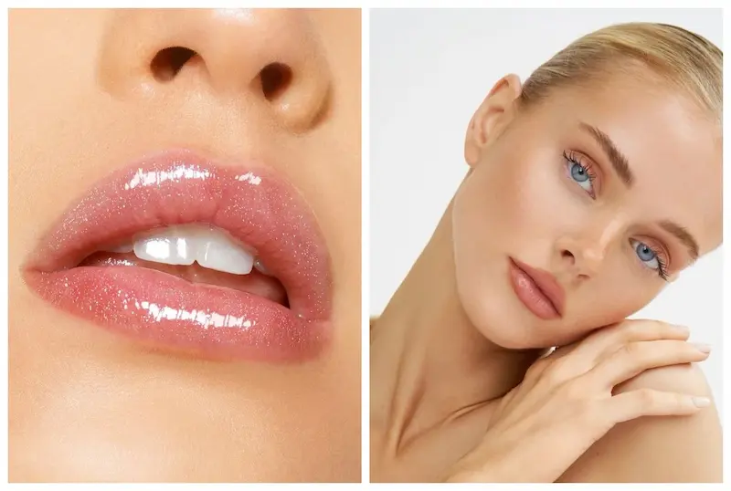
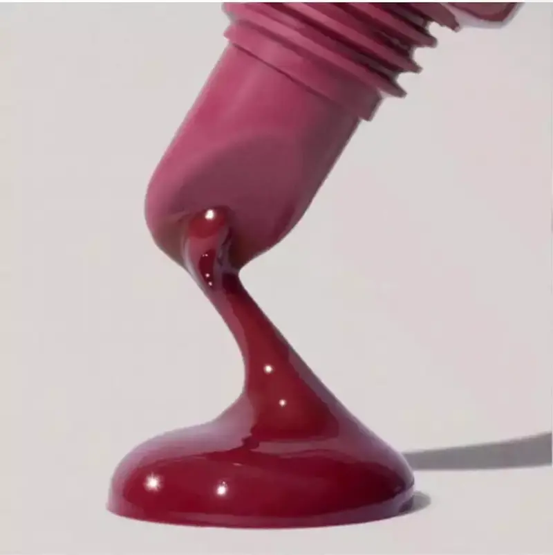
Tipuri de gloss pentru buze
Glossurile moderne pentru buze diferă nu doar prin nuanțe, ci și prin efectul pe care îl creează. Unele formule oferă o strălucire discretă, altele adaugă culoare sau creează vizual mai mult volum pentru buze.
Alegerea tipului de gloss depinde de rezultatul dorit — o strălucire discretă pentru machiajul de zi, un luciu intens pentru un look de seară sau un efect de volum pentru buze.
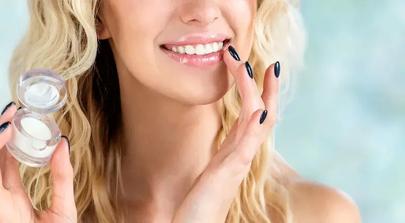
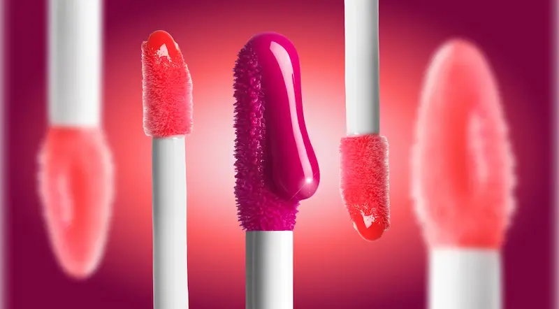
Texturi de gloss pentru buze
Textura glossului influențează confortul, rezistența și aspectul final al machiajului buzelor. Unele formule creează un efect ușor și luminos, iar altele oferă un luciu intens și volum vizual.
Pentru machiajul zilnic sunt potrivite texturile ușoare și transparente, iar pentru un look mai expresiv — glossurile cremoase sau foarte lucioase cu strălucire intensă.
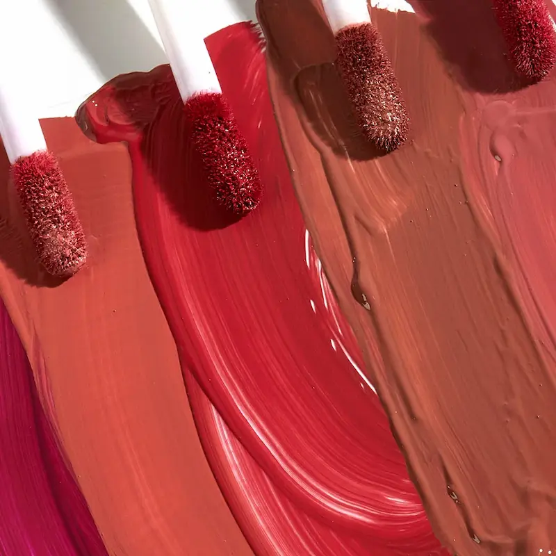
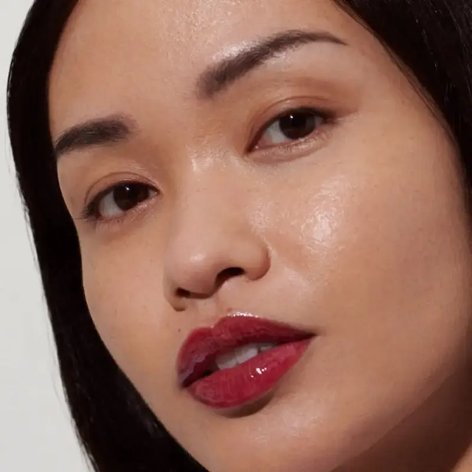
Nuanțe de gloss pentru buze
Nuanța glossului pentru buze influențează aspectul general al machiajului. Ea poate evidenția culoarea naturală a buzelor, poate adăuga prospețime sau poate crea un efect delicat de strălucire. Spre deosebire de ruj, glossul are de obicei o acoperire mai transparentă, ceea ce face ca machiajul buzelor să arate mai natural și mai luminos.
Atunci când alegi nuanța glossului, make-up artiștii recomandă să ții cont de tonul pielii — cald, rece sau neutru. Astfel machiajul devine mai armonios și evidențiază frumusețea naturală a buzelor.
Cum se aplică corect glossul pentru buze
Tehnica corectă de aplicare a glossului ajută la obținerea unui machiaj al buzelor îngrijit și luminos. Câțiva pași simpli permit obținerea unui strat uniform și a unui volum natural al buzelor.
- Pregătește buzele: folosește un scrub delicat și un balsam hidratant pentru a face buzele netede.
- Conturează buzele: dacă este necesar, folosește un creion pentru buze pentru a evidenția forma.
- Aplică glossul: distribuie produsul cu aplicatorul din centrul buzelor spre colțuri.
- Îndepărtează excesul: tamponează ușor buzele cu un șervețel dacă stratul este prea gros.
- Adaugă un al doilea strat: pentru o strălucire și un volum mai pronunțat.
Pentru a face buzele să pară mai voluminoase, poți aplica puțin gloss în centrul buzei superioare și inferioare — acest lucru creează un efect natural de lumină și volum.
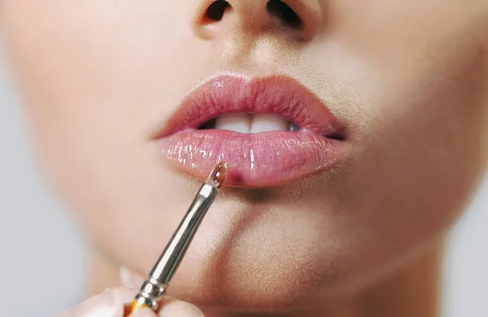
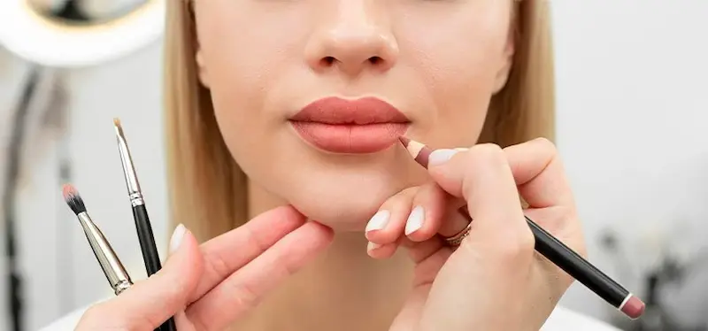
Creion și gloss pentru buze
Creionul de contur poate fi folosit nu doar cu ruj, ci și cu gloss pentru buze. Acesta ajută la evidențierea formei buzelor, face machiajul mai precis și previne întinderea glossului în afara conturului.
- Contur clar: creionul face linia buzelor mai definită și mai elegantă.
- Previne întinderea: este deosebit de util pentru glossurile foarte lucioase sau lichide.
- Creează volum: poți depăși ușor conturul natural al buzelor pentru un efect de volum.
- Bază pentru gloss: creionul poate fi aplicat pe întreaga suprafață a buzelor pentru o culoare mai intensă și mai rezistentă.
Pentru un machiaj natural este recomandat să alegi un creion care se potrivește cu nuanța buzelor sau a glossului. Astfel vei obține un look armonios și elegant.
Ai nevoie de un machiaj profesional?
Dacă vrei să alegi nuanța perfectă sau să obții un machiaj profesional, consultă un make-up artist experimentat.
Vezi serviciile unui make-up artist
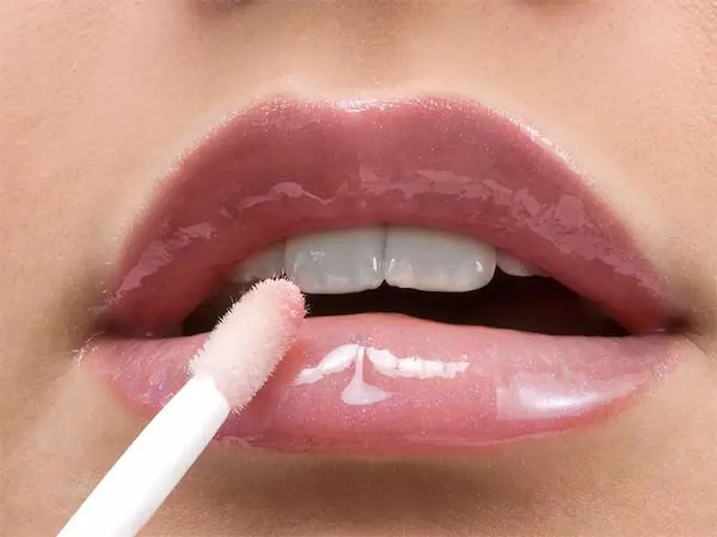
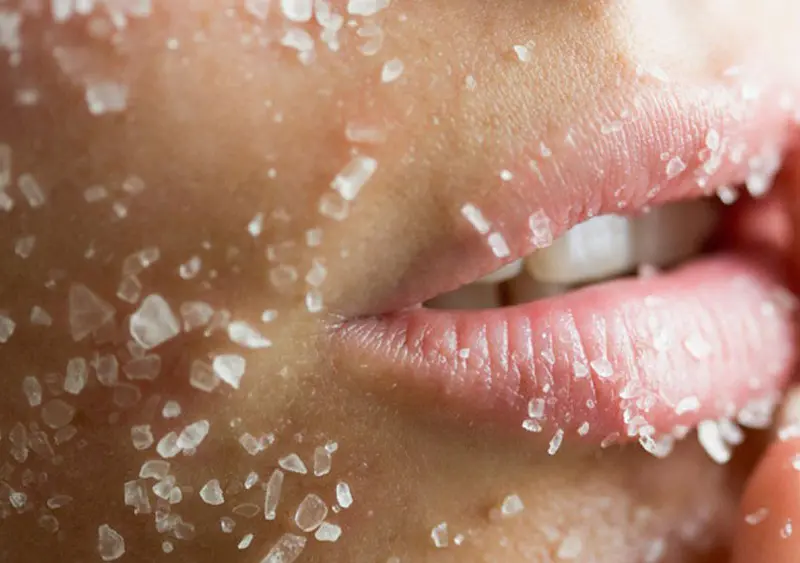
Pregătirea buzelor înainte de aplicarea glossului
Înainte de aplicarea glossului pentru buze este important să pregătești pielea buzelor. O suprafață netedă și bine hidratată ajută glossul să se aplice uniform și face machiajul buzelor mai îngrijit.
- Scrub pentru buze: îndepărtează delicat particulele de piele uscată și face buzele mai netede.
- Balsam: hidratează și înmoaie buzele înainte de aplicarea machiajului.
- Bază ușoară: ajută la uniformizarea suprafeței buzelor și face glossul mai rezistent.
- Îngrijire regulată: folosirea frecventă a balsamurilor și uleiurilor ajută la menținerea buzelor moi și îngrijite.
Dacă buzele sunt predispuse la uscăciune, este recomandat să alegi glossuri cu ingrediente hidratante — uleiuri, vitamina E sau acid hialuronic.
Ingrediente în glossurile pentru buze
Glossurile moderne pentru buze conțin nu doar componente decorative, ci și ingrediente de îngrijire. Astfel, produsul nu doar oferă strălucire buzelor, ci ajută și la menținerea hidratării și catifelării acestora.
- Uleiuri: uleiul de argan, cocos sau jojoba hidratează buzele și oferă o textură mai confortabilă.
- Ceară: ajută la crearea unei texturi netede și menține glossul pe buze mai mult timp.
- Pigmenți: oferă glossului nuanță — de la o transparență ușoară până la o culoare mai intensă.
- Polimeri: sunt responsabili pentru efectul de strălucire și pentru rezistența produsului pe buze.
- Ingrediente hidratante: vitamina E, acid hialuronic și extracte vegetale.
Multe formule moderne de gloss combină machiajul cu îngrijirea buzelor, astfel încât acestea să arate mai netede, hidratate și strălucitoare.
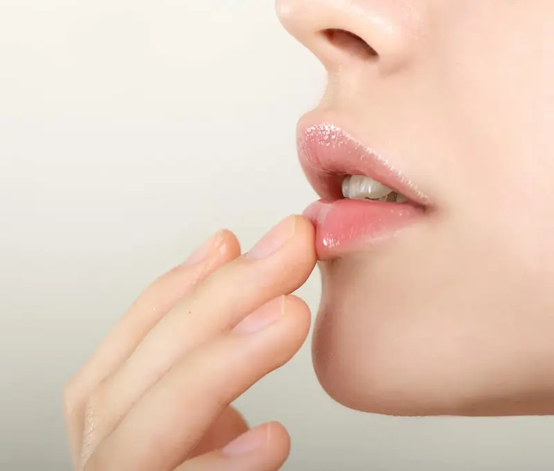
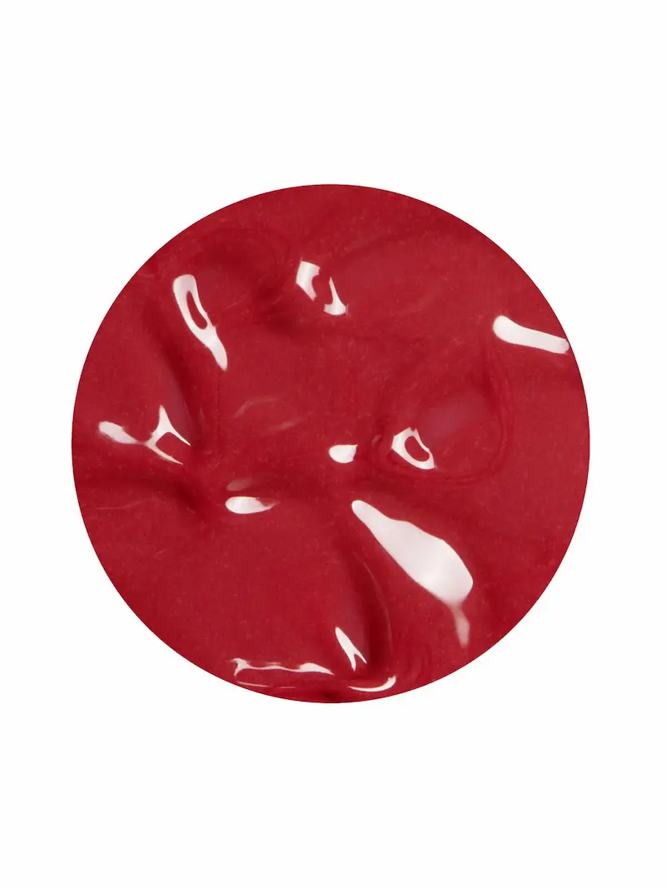
Glossuri pentru buze rezistente
Glossurile pentru buze cu rezistență ridicată oferă strălucire și pot rămâne pe buze mai mult timp decât formulele clasice. Aceste produse sunt adesea folosite pentru machiaje care trebuie să își păstreze aspectul îngrijit timp de câteva ore.
- Formule dense și lucioase: creează un strat strălucitor mai intens și se estompează mai lent.
- Glossuri tip tint: lasă o nuanță ușoară pe buze chiar și după ce luciul dispare.
- Formule cu polimeri: ajută glossul să se fixeze mai bine pe buze.
- Glossuri hidratante rezistente: combină strălucirea de lungă durată cu îngrijirea buzelor.
Pentru ca glossul să reziste mai mult, make-up artiștii recomandă să folosești mai întâi un creion de buze sau o bază ușoară, iar apoi să aplici glossul într-un strat subțire.
Cele mai bune glossuri pentru buze
O selecție de glossuri populare pentru buze — de la formule transparente cu strălucire intensă până la variante hidratante și colorate. Aceste produse sunt frecvent recomandate de make-up artiști și pot fi găsite ușor în magazinele online.
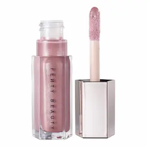
Gloss iconic cu strălucire tip oglindă
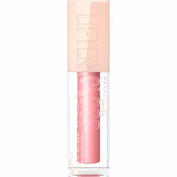
Gloss popular cu acid hialuronic
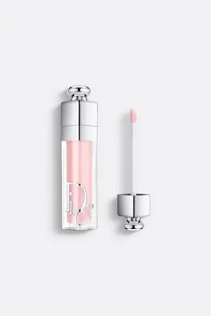
Gloss plumper cu efect de volum
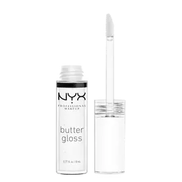
Gloss cremos cu textură delicată
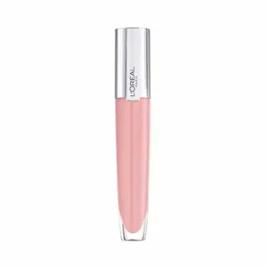
Gloss ușor cu efect de buze umede

Gloss accesibil cu strălucire intensă
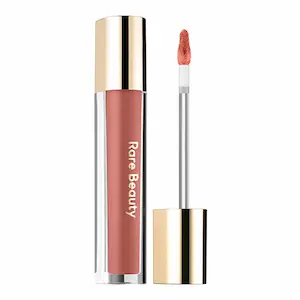
Gloss-balsam ușor cu efect hidratant

Gloss-ulei hrănitor pentru buze
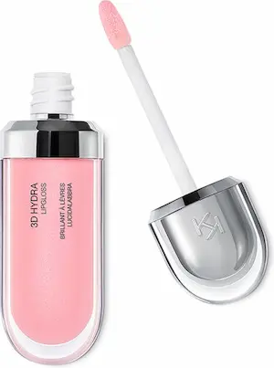
Gloss popular cu efect de volum
Sfaturi de la make-up artiști: cum să obții un machiaj perfect al buzelor cu gloss
Aceste sfaturi te vor ajuta să obții un machiaj al buzelor mai îngrijit, luminos și profesionist, indiferent dacă folosești un gloss transparent, colorat sau hidratant.
Cum să îndepărtezi corect glossul pentru buze
Chiar dacă are o textură ușoară, glossul pentru buze trebuie îndepărtat corect. Acest lucru ajută la menținerea pielii buzelor moi și previne uscarea.
- Apă micelară: dizolvă delicat glossul și curăță pielea buzelor.
- Demachiante pentru machiaj: potrivite pentru glossuri mai dense sau rezistente.
- Ulei hidrofil: dizolvă eficient formulele lucioase și uleioase ale glossului.
- Dischetă de bumbac: ajută la îndepărtarea delicată a resturilor de gloss fără frecare puternică.
După demachiere este recomandat să aplici un balsam hidratant sau un ulei pentru buze pentru a reface pielea și a menține buzele moi.
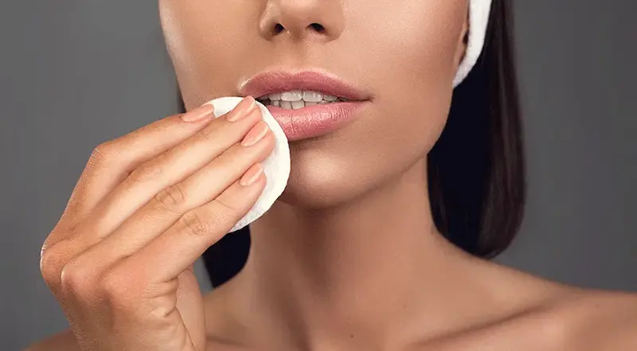
Greșeli frecvente atunci când folosești gloss pentru buze
Evitând aceste greșeli, poți obține un machiaj al buzelor frumos și îngrijit, cu o strălucire naturală.
Întrebări frecvente despre glossul pentru buze
Cum alegi un gloss pentru buze?
Atunci când alegi un gloss pentru buze este important să ții cont de textură, nuanță și efect. Pentru machiajul de zi cu zi sunt potrivite glossurile transparente sau nude, iar pentru un look mai intens — glossurile colorate sau cu particule strălucitoare.
Se poate aplica gloss peste ruj?
Da, glossul se aplică adesea peste ruj. Acest lucru oferă un efect de strălucire și face buzele să pară mai voluminoase.
Cum poți face buzele să pară mai voluminoase cu gloss?
Aplică puțin gloss în centrul buzei superioare și inferioare. Efectul lucios reflectă lumina și creează iluzia unor buze mai pline.
Este glossul potrivit pentru buzele uscate?
Multe glossuri moderne conțin ingrediente hidratante — uleiuri, vitamina E sau acid hialuronic — care ajută la menținerea buzelor moi și hidratate.
Cum poți face glossul să reziste mai mult?
Pentru o rezistență mai mare, poți aplica mai întâi un creion de buze sau un ruj ușor, iar apoi un strat subțire de gloss deasupra.